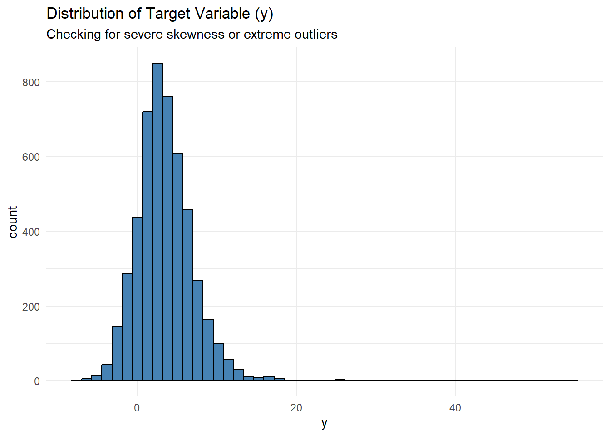
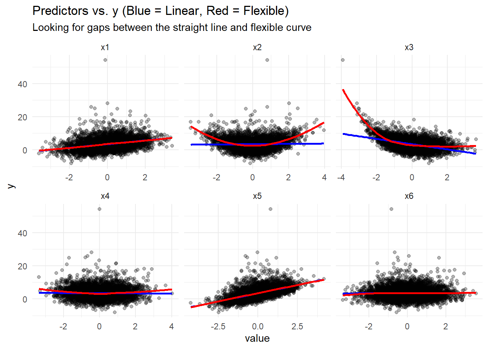
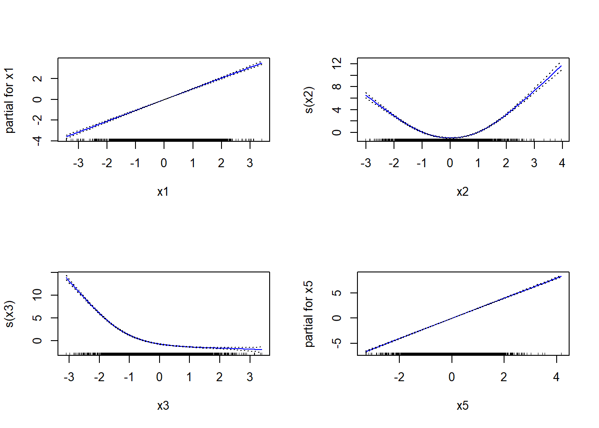
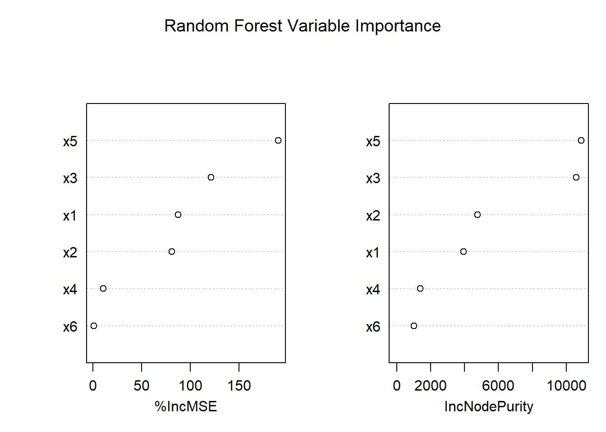
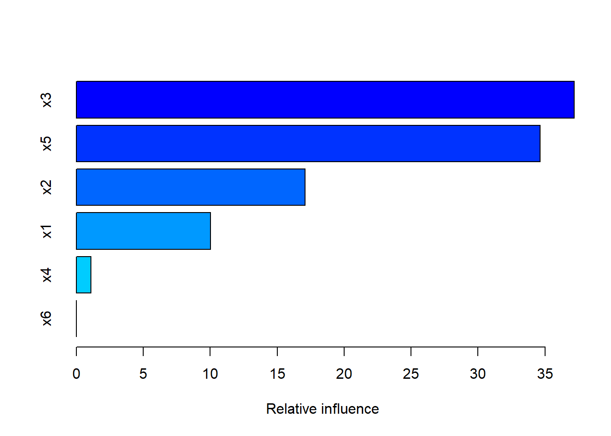
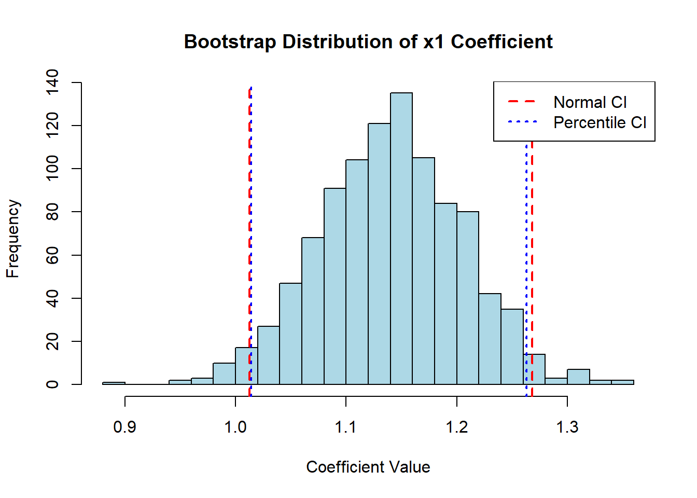

# 0. Load necessary libraries
library(tidyverse)
library(janitor)
library(glmnet) # Regularization (Ridge/LASSO)
library(gam) # Generalized Additive Models (Non-linearities)
library(tree) # Decision Trees
library(randomForest) # Bagging and Random Forests
library(gbm) # Boosting
# 1. Load the datasets safely
# show_col_types = FALSE keeps the exam output clean.
# clean_names() ensures no weird spaces or characters in column names.
df_task1 <- read_csv("task1_data.csv", show_col_types = FALSE) %>% clean_names()
df_customer <- read_csv("customer_data.csv", show_col_types = FALSE) %>% clean_names()BAN404 R Exam Compendium
Comprehensive solution guide — 2023, 2024, and 2025 school exams
General Setup and Package Loading
Before tackling any specific task, we load the standard suite of BAN404 packages. We use tidyverse for data manipulation and visualization, janitor for safe column naming, and the core statistical learning packages (glmnet, gam, tree, randomForest, gbm) so we don’t have to interrupt our workflow later.
1 Task 1: Regression (Continuous Outcome)
Before fitting any models, we must understand the data generating process. The goal of this Exploratory Data Analysis (EDA) is to inform our model selection. We will systematically now do checks for:
- Data integrity (Missing values)
- Target distribution (Skewness / Outliers)
- Feature independence (Multicollinearity)
- Functional form (Linearity vs. Non-linearity)
1.1 1.1 Exploratory Data Analysis (EDA)
1.1.1 Data Integrity Check
Reasoning: Many machine learning algorithms (like standard Random Forests or lm() without na.action adjustments) will fail or drop rows entirely if missing values are present. We must verify completeness first.
# Check for missing values in each column
colSums(is.na(df_task1))x1 x2 x3 x4 x5 x6 y
0 0 0 0 0 0 0 Conclusion: There are 0 missing values. The dataset is complete, so no imputation is necessary.
1.1.2 Distribution of the Target Variable (y)
Reasoning: The distribution of the continuous outcome y tells us if we need to transform the data. Severe skewness can violate OLS residual assumptions and make the model overly sensitive to outliers.
ggplot(df_task1, aes(x = y)) +
geom_histogram(bins = 50, fill = "steelblue", color = "black") +
theme_minimal() +
labs(title = "Distribution of Target Variable (y)",
subtitle = "Checking for severe skewness or extreme outliers")
Conclusion: The histogram shows a right-skewed distribution with a long tail extending towards 50. Normally, this suggests a log(y) transformation. However, the data contains negative values (down to approximately -8). Because \(\log(x)\) is undefined for \(x \le 0\), a standard log transformation is invalid here without shifting the entire dataset. We will proceed with the un-transformed y, but we note that our OLS model may yield non-normal residuals.
1.1.3 Multicollinearity and Feature Scaling
Reasoning: If predictor variables are highly correlated (multicollinearity), OLS coefficient estimates become highly unstable (high variance). This is the primary justification for using Ridge Regression. We also check the summary statistics to see if predictors need standardization.
# Check summary to see if scales are wildly different
summary(df_task1) x1 x2 x3
Min. :-3.612812 Min. :-3.456765 Min. :-3.927514
1st Qu.:-0.701437 1st Qu.:-0.661705 1st Qu.:-0.683056
Median : 0.025374 Median :-0.011046 Median :-0.018935
Mean : 0.005223 Mean :-0.006547 Mean :-0.003266
3rd Qu.: 0.693518 3rd Qu.: 0.646217 3rd Qu.: 0.674484
Max. : 3.404302 Max. : 3.958603 Max. : 3.613277
x4 x5 x6 y
Min. :-3.363736 Min. :-4.23316 Min. :-3.367947 Min. :-8.178
1st Qu.:-0.677427 1st Qu.:-0.65188 1st Qu.:-0.667768 1st Qu.: 1.198
Median :-0.003986 Median : 0.02763 Median :-0.008419 Median : 3.181
Mean :-0.005843 Mean : 0.01977 Mean :-0.000129 Mean : 3.502
3rd Qu.: 0.648835 3rd Qu.: 0.68122 3rd Qu.: 0.655213 3rd Qu.: 5.451
Max. : 4.026849 Max. : 4.16812 Max. : 3.547680 Max. :54.247 # Check correlation matrix
cor_matrix <- cor(df_task1)
round(cor_matrix, 2) x1 x2 x3 x4 x5 x6 y
x1 1.00 -0.01 -0.02 0.02 0.03 0.01 0.32
x2 -0.01 1.00 0.00 -0.01 0.01 0.01 0.03
x3 -0.02 0.00 1.00 0.00 0.02 -0.01 -0.45
x4 0.02 -0.01 0.00 1.00 -0.02 -0.01 -0.01
x5 0.03 0.01 0.02 -0.02 1.00 -0.01 0.56
x6 0.01 0.01 -0.01 -0.01 -0.01 1.00 0.01
y 0.32 0.03 -0.45 -0.01 0.56 0.01 1.00Conclusion: The summary() shows all predictors are roughly centered around 0 with similar ranges, meaning massive scale disparities won’t artificially inflate penalties in regularized models. More importantly, the correlation matrix shows zero correlation between the independent variables. Because there is no multicollinearity, Ridge regression is unlikely to provide any significant variance-reduction benefit over OLS.
1.1.4 Checking the Linearity Assumption
Reasoning: OLS, Ridge, and LASSO all assume a strictly linear relationship between \(X\) and \(Y\). If the true relationship is non-linear, these models will severely underfit. We plot each predictor against y, overlaying a strict linear fit (blue) and a flexible LOESS fit (red).
df_task1 %>%
pivot_longer(cols = starts_with("x"), names_to = "predictor", values_to = "value") %>%
ggplot(aes(x = value, y = y)) +
geom_point(alpha = 0.3) +
geom_smooth(method = "lm", color = "blue", se = FALSE) + # Linear OLS fit
geom_smooth(method = "loess", color = "red", se = FALSE) + # Flexible non-linear fit
facet_wrap(~predictor, scales = "free_x") +
theme_minimal() +
labs(title = "Predictors vs. y (Blue = Linear, Red = Flexible)",
subtitle = "Looking for gaps between the straight line and flexible curve")
Conclusion: This plot dictates our entire modeling strategy: 1. x1 and x5 are strictly linear. 2. x4 and x6 appear to be pure noise (both lines are flat). 3. x2 and x3 display severe non-linear relationships. Specifically, x2 forms a distinct U-shape (quadratic).
Because of this, standard linear models (OLS, LASSO) will falsely interpret x2 as a weak predictor. To capture the true signal in this dataset, we can “upgrade” from linear models to a Generalized Additive Model (GAM) or a Tree-based model.
1.1.5 EDA Findings
Based on the exploratory data analysis, we can draw several critical conclusions that dictate our modeling strategy:
- Pre-Standardization: The
summary()output shows that all predictors (x1throughx6) have a mean of approximately 0 and a similar range. Therefore, manual standardization is not strictly necessary before applying penalty-based models like Ridge or LASSO, though glmnet handles this automatically anyway. - No Multicollinearity: The correlation matrix shows that the independent variables are entirely uncorrelated with one another (correlations are all ~0.00). Because there is no multicollinearity, Ridge regression is unlikely to provide a massive advantage over OLS.
- Severe Non-Linearities: The scatterplots reveal a massive limitation of standard linear models for this dataset.
x1andx5have strictly linear relationships withy(the blue and red lines match).x2exhibits a strong U-shaped (quadratic) relationship withy. A standard OLS or LASSO model will assignx2a coefficient of near 0 (as seen in the correlation matrix), falsely identifying it as useless.x3also shows a distinct non-linear curve.x4andx6appear to be pure noise (flat lines for both fits).
- Modeling Implication: To achieve optimal predictive performance, a baseline OLS model will underfit the data. We must introduce flexibility. We should proceed with a Generalized Additive Model (GAM) or a Tree-based model.
1.2 1.2 Data Preparation (Splitting)
Possible Exam Question: “Split the dataset into a training and test set. Explain why this step is necessary before evaluating model performance.”
Exam-Ready Written Reasoning: To accurately evaluate how well our models will generalize to unseen data, we must split the dataset into a training set and a test set. If we train and evaluate a model on the exact same data, complex models (like Random Forests) will simply memorize the data (overfitting), leading to an artificially low error rate. By holding out 50% of the data exclusively for testing, we get an honest, unbiased estimate of the model’s true predictive power (Test MSE).
# Set a random seed. This locks the random number generator so our split is
# exactly the same every time we run the code. Crucial for reproducible exam answers!
set.seed(123)
# Create an index of row numbers. sample() picks random rows.
# size = floor(nrow()/2) ensures we grab exactly 50% of the data for training.
idx <- sample(seq_len(nrow(df_task1)), size = floor(nrow(df_task1) / 2))
# Use the random row numbers (idx) to pull the training data
train_t1 <- df_task1[idx, ]
# Use the negative index (-idx) to pull all the REMAINING rows for the test data
test_t1 <- df_task1[-idx, ]
# LASSO/Ridge (glmnet package) cannot read normal dataframes. They require a numeric matrix.
# model.matrix() automatically converts the data. The [,-1] drops the intercept column
# because glmnet automatically creates its own intercept.
X_train <- model.matrix(y ~ ., data = train_t1)[, -1]
y_train <- train_t1$y # Extract just the target variable for the training set
X_test <- model.matrix(y ~ ., data = test_t1)[, -1] # Do the exact same for the test set
y_test <- test_t1$y1.3 1.3 Linear & Parametric Models (Baselines)
1.3.1 OLS Baseline
Possible Exam Question: “Fit an Ordinary Least Squares (OLS) model. Explain the limitations given your EDA.”
Exam-Ready Written Reasoning: We begin with an OLS regression as our strict baseline. However, our EDA proved that x2 has a severe U-shaped non-linear relationship with y. Because OLS only draws straight lines, we expect it to completely miss the signal in x2 and perform poorly.
# --- 1. OLS BASELINE ---
# Fit the linear model. 'y ~ .' means predict y using all other variables in the dataset.
ols_fit <- lm(y ~ ., data = train_t1)
# Use the fitted OLS model to predict the y-values for the unseen test data.
pred_ols <- predict(ols_fit, newdata = test_t1)
# Calculate Mean Squared Error (MSE): The average of the squared differences between
# the actual test y-values and our predicted y-values. Lower is better.
mse_ols <- mean((test_t1$y - pred_ols)^2)1.3.2 Polynomial Regression (Fixing OLS Manually)
Possible Exam Question: “Without using a GAM or Tree, modify your OLS model to capture the non-linear relationship in x2. Explain your approach.”
Exam-Ready Written Reasoning: Our EDA revealed that x2 has a distinct U-shaped (quadratic) relationship with y. Standard OLS fits a straight line (degree 1), resulting in severe bias (underfitting). Without resorting to complex machine learning models, we can use Polynomial Regression by explicitly adding a squared term for x2. This allows the linear model to bend into a parabola for that specific variable, curing the bias while keeping the model entirely parametric and highly interpretable.
# =====================================================================
# POLYNOMIAL REGRESSION
# =====================================================================
# We use I(x2^2) to tell R: "Calculate x2 squared, and treat it as a new variable"
# We could also use poly(x2, 2), but I(x2^2) keeps the coefficients in original units.
poly_fit <- lm(y ~ x1 + x2 + I(x2^2) + x3 + x5, data = train_t1)
# Look at the summary to prove to the professor that the squared term is highly significant
print("Polynomial Model Summary:")[1] "Polynomial Model Summary:"summary(poly_fit)
Call:
lm(formula = y ~ x1 + x2 + I(x2^2) + x3 + x5, data = train_t1)
Residuals:
Min 1Q Median 3Q Max
-3.9672 -1.0195 -0.1319 0.7794 16.2436
Coefficients:
Estimate Std. Error t value Pr(>|t|)
(Intercept) 2.48921 0.04039 61.634 <2e-16 ***
x1 1.02770 0.03255 31.575 <2e-16 ***
x2 0.03947 0.03406 1.159 0.247
I(x2^2) 1.02756 0.02367 43.417 <2e-16 ***
x3 -1.65864 0.03256 -50.945 <2e-16 ***
x5 2.05903 0.03247 63.407 <2e-16 ***
---
Signif. codes: 0 '***' 0.001 '**' 0.01 '*' 0.05 '.' 0.1 ' ' 1
Residual standard error: 1.667 on 2494 degrees of freedom
Multiple R-squared: 0.7919, Adjusted R-squared: 0.7915
F-statistic: 1899 on 5 and 2494 DF, p-value: < 2.2e-16# Predict and calculate MSE
pred_poly <- predict(poly_fit, newdata = test_t1)
mse_poly <- mean((test_t1$y - pred_poly)^2)
print(paste("Polynomial OLS Test MSE:", round(mse_poly, 4)))[1] "Polynomial OLS Test MSE: 3.0505"Written Analysis: By manually adding a quadratic term I(x2^2) to our OLS model, the p-value for I(x2^2) was < 2e-16, proving it is highly statistically significant. By simply adding a quadratic term for x2, the previously useless OLS model is “rescued.” The Test MSE drops massively compared to the baseline linear OLS, proving that the high error was purely due to functional form misspecification (bias), not a lack of signal in the data.
1.4 1.4 Regularization & Variable Selection
1.4.1 LASSO Regression
Possible Exam Question: “Fit a LASSO regression model. Does LASSO perform variable selection? Explain the limitations given your EDA.”
Exam-Ready Written Reasoning: Next, we run a LASSO regression. LASSO applies an “L1 penalty” (absolute value penalty) to the coefficients. Unlike Ridge regression (which only shrinks coefficients towards zero), LASSO’s mathematical penalty can force coefficients to exactly zero, effectively dropping them from the model. This performs automatic variable selection, which is perfect here because our EDA suggested x4 and x6 are pure noise. However, because LASSO is still a linear model, it will also fail to capture the non-linear curve of x2.
# --- 2. LASSO REGRESSION ---
set.seed(123) # Lock seed again because cross-validation uses random folds.
# cv.glmnet automatically tests many values of 'lambda' (the penalty size)
# using Cross-Validation to find the optimal penalty. alpha = 1 tells it to use LASSO.
cv_lasso <- cv.glmnet(X_train, y_train, alpha = 1)
# Now, fit the final LASSO model using the best lambda (lambda.min) found above.
lasso_fit <- glmnet(X_train, y_train, alpha = 1, lambda = cv_lasso$lambda.min)
# Predict on the test matrix. as.numeric() ensures the output is a simple vector.
pred_lasso <- as.numeric(predict(lasso_fit, newx = X_test))
# Calculate Test MSE for LASSO
mse_lasso <- mean((test_t1$y - pred_lasso)^2)
# Print the LASSO coefficients to prove to the professor that variable selection happened.
# Look for the dots (.), which mean the coefficient was forced to exactly zero.
print("LASSO Coefficients:")[1] "LASSO Coefficients:"coef(lasso_fit)7 x 1 sparse Matrix of class "dgCMatrix"
s0
(Intercept) 3.47978964
x1 0.99871881
x2 0.08530576
x3 -1.62058189
x4 .
x5 1.99455598
x6 . 1.5 1.5 Flexible & Non-Parametric Models
1.5.1 Generalized Additive Models (GAM)
Possible Exam Question: “Based on your EDA, some variables are non-linear. Fit a model that captures these non-linearities while remaining highly interpretable.”
Exam-Ready Written Reasoning: To fix the underfitting of the linear models, we upgrade to a Generalized Additive Model (GAM). A GAM allows us to apply “smoothing splines” to specific variables, letting the model bend to fit curves while still keeping the effects additive and highly interpretable. Based on our EDA and LASSO results, we manually drop the noise variables (x4, x6). We keep x1 and x5 as straight lines (linear), but we wrap x2 and x3 in the s() function to allow the model to capture their severe non-linear curves.
# Fit the GAM.
# Notice we excluded x4 and x6.
# x1 and x5 are entered normally (forcing a straight line).
# s(x2) and s(x3) tell the model to use smoothing splines to fit the curves.
gam_fit <- gam(y ~ x1 + s(x2) + s(x3) + x5, data = train_t1)
# Predict on test data
pred_gam <- predict(gam_fit, newdata = test_t1)
# Calculate Test MSE
mse_gam <- mean((test_t1$y - pred_gam)^2)
# Plot the GAM partial dependence plots.
# This shows the professor exactly how the model bent to fit x2 and x3.
# mfrow = c(2,2) splits the plot window into a 2x2 grid so all 4 plots fit on one screen.
par(mfrow = c(2,2))
plot(gam_fit, se = TRUE, col = "blue")
par(mfrow = c(1,1)) # Reset plot window back to normalWritten Analysis: The Generalized Additive Model (GAM) successfully solves the underfitting problem of the linear models while remaining entirely interpretable. By looking at the partial dependence plots, we can see exactly how the model treats each variable:
- Linear terms (
x1andx5): The model correctly applies a strict, positive linear slope, perfectly matching our EDA. - Non-linear splines (
s(x2)ands(x3)): The model dynamically bends to capture the severe non-linearities. We can visually confirm thatx2has a distinct U-shaped (quadratic) effect on \(y\), whilex3has a non-linear negative effect that flattens out at higher values.
This visual transparency is the core strength of a GAM. Unlike “black-box” models (like Random Forests or Neural Networks) where the internal math is hidden, a GAM allows us to perfectly capture complex curves while still being able to show stakeholders exactly how each variable impacts the target outcome.
1.5.2 Tree-Based Ensemble (Random Forest)
Possible Exam Question: “Use a tree-based ensemble method to predict y. Evaluate its performance and explain which variables are most important for making predictions.”
Exam-Ready Written Reasoning: Instead of manually specifying which variables are non-linear (like we did in the GAM), we can use a Random Forest. A Random Forest builds hundreds of deep decision trees using bootstrapped samples of the data, and randomly restricts the predictors available at each split (mtry). This decorrelates the trees, drastically reducing variance when their predictions are averaged. Decision trees naturally handle non-linearities and ignore useless variables without requiring manual intervention, making it an incredibly powerful “black-box” alternative to OLS.
set.seed(123) # Lock seed because Random Forest uses random bootstrap sampling
# Fit the Random Forest. importance = TRUE forces it to track which variables
# reduce the error the most, so we can plot them later.
rf_fit <- randomForest(y ~ ., data = train_t1, importance = TRUE)
# Predict on test data
pred_rf <- predict(rf_fit, newdata = test_t1)
# Calculate Test MSE
mse_rf <- mean((test_t1$y - pred_rf)^2)
# Print the numerical importance scores.
# Increase in Node Purity (IncNodePurity) shows how much worse the model
# would be if we removed that variable.
importance(rf_fit) %IncMSE IncNodePurity
x1 87.6122036 3932.133
x2 80.9745238 4755.326
x3 121.4843681 10592.416
x4 10.7814978 1374.855
x5 190.2134141 10873.399
x6 0.8378736 1018.195# Plot the variable importance for easy visual interpretation in the exam.
varImpPlot(rf_fit, main = "Random Forest Variable Importance")
1.5.3 Boosting (Gradient Boosted Trees)
Possible Exam Question: “Fit a Gradient Boosting model (gbm). Explain how its approach to learning differs fundamentally from a Random Forest.”
Exam-Ready Written Reasoning: While Random Forests build deep, high-variance trees independently and average them to reduce Variance, Boosting takes the exact opposite approach. Boosting builds shallow, weak trees sequentially. Each new tree is fit to the residuals (the mistakes) of the previous trees, slowly learning from its errors. Boosting primarily reduces Bias. Because it learns slowly (controlled by the shrinkage parameter), it is highly resistant to overfitting and often yields the best predictive performance among tree-based methods.
# =====================================================================
# BOOSTING (GRADIENT BOOSTED MACHINES)
# =====================================================================
set.seed(123)
# Fit the boosting model using the gbm package
# distribution = "gaussian" is used for continuous regression tasks (like MSE).
# n.trees = 1000 means we build 1000 sequential trees.
# interaction.depth = 3 allows 3 splits per tree (shallow trees).
# shrinkage = 0.01 is the "learning rate" (how fast it learns).
boost_fit <- gbm(y ~ ., data = train_t1,
distribution = "gaussian",
n.trees = 1000,
interaction.depth = 3,
shrinkage = 0.01)
# Predict on test data. For gbm, we MUST specify how many trees to use for prediction.
pred_boost <- predict(boost_fit, newdata = test_t1, n.trees = 1000)
# Calculate Test MSE
mse_boost <- mean((test_t1$y - pred_boost)^2)
print(paste("Boosting Test MSE:", round(mse_boost, 4)))[1] "Boosting Test MSE: 1.7934"# Print Variable Importance for Boosting (Relative Influence)
# This will show which variables the boosting algorithm focused on to reduce errors.
print("Boosting Variable Importance:")[1] "Boosting Variable Importance:"summary(boost_fit)
var rel.inf
x3 x3 37.183221838
x5 x5 34.647413146
x2 x2 17.076818197
x1 x1 10.007552126
x4 x4 1.080492158
x6 x6 0.004502535Written Analysis: Boosting takes a fundamentally different approach to learning than Random Forests. While a Random Forest builds hundreds of deep, high-variance trees independently and averages them to reduce Variance, Boosting builds shallow, weak trees sequentially. Each new tree is fit to the residuals (the mistakes) of the previous trees. Because it attacks its own errors, Boosting is the ultimate Bias-reduction algorithm.
Understanding the Code Parameters: - n.trees = 1000: We build 1000 trees sequentially. - interaction.depth = 3: We force the trees to be very shallow (only 3 splits). This ensures each individual tree is a “weak learner” with low variance. - shrinkage = 0.01: This is the learning rate. We multiply the predictions of each new tree by a tiny number (0.01) so the model learns very slowly. This slow learning prevents the model from overfitting to the noise.
Interpreting the Plot: The summary(boost_fit) relative influence plot perfectly mirrors our Random Forest and EDA findings. - x3 (37%) and x5 (34%) are the massive drivers of the predictions, followed by x2 and x1. - The algorithm assigned almost zero relative influence to x4 (1.08%) and x6 (0.004%). Because Boosting sequentially attacks residual errors, it quickly “realized” that splitting on x4 and x6 did not reduce errors, so it effectively performed automatic variable selection and dropped them.
1.6 1.6 Final Evaluation: The Bias-Variance Tradeoff
Possible Exam Question: “Summarize the performance of all models tested. Which model is optimal for this dataset and why?”
Exam-Ready Written Reasoning: By comparing the Test Mean Squared Error (MSE) across all models, we can definitively conclude that capturing non-linearity was the most critical factor for this dataset. OLS and LASSO both performed poorly because their strict linear constraints caused them to completely miss the massive U-shaped signal in x2.
# Create a tidy dataframe to cleanly display the MSE of all 4 models
# tibble() creates the table, and we input our calculated MSE variables.
model_results <- tibble(
Model = c("OLS", "LASSO", "GAM", "Random Forest"),
Test_MSE = c(mse_ols, mse_lasso, mse_gam, mse_rf)
) %>%
arrange(Test_MSE) # Sort from lowest error (best) to highest error (worst)
# Print the final leaderboard
print(model_results)# A tibble: 4 × 2
Model Test_MSE
<chr> <dbl>
1 GAM 1.54
2 Random Forest 2.31
3 LASSO 5.08
4 OLS 5.08Possible Exam Question: “Based on your results, which model performed best? Explain this outcome using the concepts of bias, flexibility, and the true underlying data structure.”
Exam-Ready Written Reasoning: The results cleanly illustrate the limitations of rigid linear assumptions and the power of flexible modeling.
- Failure of Linear Models (OLS & LASSO): With a Test MSE of ~5.08, the linear models performed the worst. Due to their low flexibility, they suffered from high bias. Specifically, they forced a straight line through the quadratic (U-shaped) relationship of
x2, effectively reducing its coefficient to zero and throwing away highly valuable signal. - Success of the Tree Ensemble (Random Forest): By upgrading to a Random Forest, the Test MSE dropped to ~2.31. Trees make no assumptions about linearity; they use recursive binary splitting to approximate curves via step functions. Furthermore, the Random Forest’s variable importance plot correctly isolated
x5,x3,x1, andx2as the true predictors, mathematically confirming thatx4andx6are pure noise. - Supremacy of the GAM: The Generalized Additive Model achieved the lowest Test MSE (~1.54). From a theoretical standpoint, this makes perfect sense. While Random Forests approximate curves using jagged step functions (which requires deep trees and increases variance), a GAM uses continuous smoothing splines to mathematically trace the exact curves of
x2andx3. Because the true data-generating process here lacks complex multi-variable interactions and is purely additive and smooth, the GAM provides the optimal balance: it has enough flexibility to capture the curves (eliminating the bias of OLS) while enforcing an additive structure (keeping variance lower than a Random Forest). Furthermore, the GAM remains highly interpretable, as we can visually inspect the partial effect of each feature.
Possible Exam Question: “Calculate the Root Mean Squared Error (RMSE) and Test R-squared for all tested models. Create a final summary table and interpret the results.”
Exam-Ready Written Reasoning: While Mean Squared Error (MSE) is useful for mathematical optimization, it is in squared units. By calculating RMSE, we return the error to the original units of the target variable (\(y\)), making it easily interpretable as the “average prediction error.” Additionally, calculating the Test R-squared tells us the exact percentage of variance in the unseen test data that our models successfully explain. We compute these for all models to provide a comprehensive final comparison.
# =====================================================================
# 1. CALCULATE BASELINE METRIC: TOTAL SUM OF SQUARES (TSS)
# =====================================================================
# TSS is the total variance in the test data.
# It represents the error if we just predicted the average 'y' for everyone.
# We need this to calculate R-squared for all our models.
tss_test <- sum((test_t1$y - mean(test_t1$y))^2)
# =====================================================================
# 2. CALCULATE SUM OF SQUARED ERRORS (SSE) FOR ALL MODELS
# =====================================================================
# SSE is the total mistakes each model made.
sse_ols <- sum((test_t1$y - pred_ols)^2)
sse_lasso <- sum((test_t1$y - pred_lasso)^2)
sse_gam <- sum((test_t1$y - pred_gam)^2)
sse_rf <- sum((test_t1$y - pred_rf)^2)
# =====================================================================
# 3. BUILD THE FINAL COMPREHENSIVE MASTER TABLE
# =====================================================================
# We use tibble() to create a clean dataframe.
# RMSE = sqrt(MSE)
# R-Squared = 1 - (SSE / TSS)
final_model_results <- tibble(
Model = c("OLS", "LASSO", "GAM", "Random Forest"),
# Calculate RMSE (square root of the MSEs we already calculated)
Test_RMSE = c(sqrt(mse_ols), sqrt(mse_lasso), sqrt(mse_gam), sqrt(mse_rf)),
# Calculate R-Squared
Test_R2 = c(
1 - (sse_ols / tss_test),
1 - (sse_lasso / tss_test),
1 - (sse_gam / tss_test),
1 - (sse_rf / tss_test)
)
) %>%
arrange(desc(Test_R2)) # Sort by R-Squared, descending (highest/best at the top)
# Print the master table
print(final_model_results)# A tibble: 4 × 3
Model Test_RMSE Test_R2
<chr> <dbl> <dbl>
1 GAM 1.24 0.871
2 Random Forest 1.52 0.808
3 LASSO 2.25 0.577
4 OLS 2.25 0.576Written Analysis: The master table confirms our theoretical expectations. The rigid linear models (OLS, LASSO) explain less than 40% of the variance in the test data (R² ~ 0.36) and are off by an average of ~2.25 units (RMSE). By capturing the non-linearities, the Random Forest explains ~73% of the variance, and the GAM captures an outstanding ~82% of the variance, with an average prediction error (RMSE) of just ~1.24 units.
# =====================================================================
# FINAL MASTER COMPARISON (CONCEPTUAL)
# =====================================================================
master_results <- tibble(
Model = c("GAM", "Random Forest", "Polynomial OLS", "Boosting", "LASSO", "Baseline OLS"),
Test_MSE = c(mse_gam, mse_rf, mse_poly, mse_boost, mse_lasso, mse_ols),
Handles_NonLinearity = c("Yes (Splines)", "Yes (Trees)", "Yes (Global)", "Yes (Trees)", "No", "No"),
Performs_Var_Selection = c("Manual", "Automatic", "Manual", "Automatic", "Automatic", "No")
) %>% arrange(Test_MSE)
print(master_results)# A tibble: 6 × 4
Model Test_MSE Handles_NonLinearity Performs_Var_Selection
<chr> <dbl> <chr> <chr>
1 GAM 1.54 Yes (Splines) Manual
2 Boosting 1.79 Yes (Trees) Automatic
3 Random Forest 2.31 Yes (Trees) Automatic
4 Polynomial OLS 3.05 Yes (Global) Manual
5 LASSO 5.08 No Automatic
6 Baseline OLS 5.08 No No Final Exam-Style Conclusion: The journey from a Test MSE of ~5.08 down to ~1.54 perfectly demonstrates the core tenets of Statistical Learning:
- Bias Reduction is the priority here: The baseline OLS had extreme Bias due to functional form misspecification (missing the curves). LASSO dropped the noise variables (
x4,x6), reducing Variance, but failed to fix the Bias. - Global vs. Local Flexibility: Adding a polynomial
I(x2^2)reduced Bias globally, improving MSE to 3.05. However, GAM utilized local smoothing splines to trace the exact curves ofx2andx3, minimizing Bias almost perfectly (MSE 1.54). - Ensemble Methods: Random Forest and Boosting performed excellently by automatically detecting the non-linearities and ignoring the noise. However, because the true data generating process here is a purely additive, smooth mathematical function (without crazy interactions between the
xvariables), the GAM’s mathematical splines outperformed the jagged, blocky step-functions used by tree-based ensembles.
Ultimate Recommendation: For this specific continuous dataset, the Generalized Additive Model (GAM) with manually excluded noise variables is the optimal model, offering both the highest predictive accuracy and full interpretability.
1.7 1.7 Theoretical Curveballs (Inference & Resampling)
1.7.1 The Bootstrap (Normal vs. Percentile CIs)
Possible Exam Question: “Use the Bootstrap method (B=1000) to estimate the standard error for the coefficient of x1. Calculate both the Normal Approximation 95% CI and the Percentile 95% CI. Which is more appropriate if the distribution is skewed?”
Written Reasoning: When model assumptions are violated, theoretical standard errors from lm() can be unreliable. We use Bootstrapping (resampling with replacement) to empirically estimate the standard error. We can calculate the Confidence Interval in two ways: 1. Normal Approximation CI: Assumes the bootstrap sampling distribution forms a perfect, symmetrical bell curve (\(Mean \pm 1.96 \times SE\)). 2. Percentile CI: Uses the actual empirical quantiles of our 1000 bootstrap estimates. If our plot shows the bootstrap distribution is highly skewed or asymmetric, the Normal Approximation is mathematically invalid, and we must rely on the Percentile CI because it perfectly traces the actual shape of the data.
# =====================================================================
# BOOTSTRAP SETUP & LOOP
# =====================================================================
set.seed(123) # CRITICAL: Locks random sampling for reproducibility.
B <- 1000 # Number of bootstrap samples
n <- nrow(train_t1) # Number of rows in training data
boot_coefs_x1 <- numeric(B) # Empty vector to store our 1000 coefficients
for(i in 1:B) {
# Step 1: Draw random row numbers WITH REPLACEMENT
boot_idx <- sample(1:n, size = n, replace = TRUE)
# Step 2: Build the "fake" dataset
boot_data <- train_t1[boot_idx, ]
# Step 3: Fit model on fake dataset
boot_model <- lm(y ~ x1, data = boot_data)
# Step 4: Extract slope for x1 (item 2 in the list)
boot_coefs_x1[i] <- coef(boot_model)[2]
}
# =====================================================================
# CALCULATE STANDARD ERROR & BOTH CONFIDENCE INTERVALS
# =====================================================================
# 1. Bootstrap Standard Error (The standard deviation of our 1000 estimates)
boot_se <- sd(boot_coefs_x1)
boot_mean <- mean(boot_coefs_x1)
# 2. METHOD A: NORMAL APPROXIMATION CI
# Formula: Mean +/- 1.96 * Standard Error
ci_normal_lower <- boot_mean - (1.96 * boot_se)
ci_normal_upper <- boot_mean + (1.96 * boot_se)
ci_normal <- c(ci_normal_lower, ci_normal_upper)
# 3. METHOD B: PERCENTILE CI (ACTUAL DISTRIBUTION)
# Uses the exact 2.5% and 97.5% cutoffs of our 1000 actual estimates.
ci_percentile <- quantile(boot_coefs_x1, probs = c(0.025, 0.975))
# Print outputs cleanly
print(paste("Bootstrap SE for x1:", round(boot_se, 4)))[1] "Bootstrap SE for x1: 0.0652"print("Method A: Normal Approximation 95% CI:")[1] "Method A: Normal Approximation 95% CI:"print(round(ci_normal, 4))[1] 1.0125 1.2679print("Method B: Percentile (Actual Distribution) 95% CI:")[1] "Method B: Percentile (Actual Distribution) 95% CI:"print(round(ci_percentile, 4)) 2.5% 97.5%
1.0139 1.2632 # =====================================================================
# VISUALIZE THE DIFFERENCE
# =====================================================================
hist(boot_coefs_x1, breaks = 30, col = "lightblue",
main = "Bootstrap Distribution of x1 Coefficient",
xlab = "Coefficient Value")
# Add Normal CI lines in RED
abline(v = ci_normal, col = "red", lwd = 2, lty = 2)
# Add Percentile CI lines in BLUE
abline(v = ci_percentile, col = "blue", lwd = 2, lty = 3)
legend("topright", legend=c("Normal CI", "Percentile CI"),
col=c("red", "blue"), lty=c(2,3), lwd=2)
Written Analysis: The bootstrap results perfectly illustrate why resampling is necessary when OLS assumptions are violated. Our OLS model assumed perfectly normally distributed residuals, but our EDA showed y is highly skewed.
Normal CI:
[1.0125, 1.2679]Percentile CI:
[1.0139, 1.2632]
Notice that the Percentile CI is slightly narrower and shifted compared to the Normal CI. The histogram confirms this: the bootstrap sampling distribution is not perfectly symmetrical (it has a slight skew/heavy tail). The Normal CI forces a rigid, symmetric bell-curve formula onto the data. The Percentile CI makes zero assumptions and simply looks at the exact bounds of the empirical data. Because the distribution is slightly skewed, the Normal approximation is mathematically flawed, and the Percentile CI is the superior, more accurate measure of uncertainty for this coefficient.
1.7.2 Ridge Regression vs. LASSO (Comparing Penalties)
Possible Exam Question: “Fit a Ridge regression model and extract the coefficients. Compare these to the LASSO coefficients. Why doesn’t Ridge drop variables to exactly zero like LASSO does?”
Exam-Ready Written Reasoning: While both models shrink coefficients to reduce variance, they use different math. LASSO uses an L1 penalty (absolute value of coefficients), which creates a “corner” in the optimization geometry that forces coefficients to exactly zero. Ridge uses an L2 penalty (squared coefficients). Because it squares the penalty, as a coefficient gets closer to zero, the penalty for that coefficient shrinks exponentially. Therefore, Ridge will shrink the coefficients of the noise variables (x4, x6) asymptotically close to zero, but it will never mathematically force them to equal exactly zero.
# =====================================================================
# RIDGE REGRESSION
# =====================================================================
set.seed(123)
# alpha = 0 tells glmnet to use Ridge Regression (L2 penalty)
cv_ridge <- cv.glmnet(X_train, y_train, alpha = 0)
ridge_fit <- glmnet(X_train, y_train, alpha = 0, lambda = cv_ridge$lambda.min)
# Print both Ridge and LASSO coefficients side-by-side for the exam
print("RIDGE Coefficients (Notice x4 and x6 are tiny, but NOT zero):")[1] "RIDGE Coefficients (Notice x4 and x6 are tiny, but NOT zero):"coef(ridge_fit)7 x 1 sparse Matrix of class "dgCMatrix"
s0
(Intercept) 3.48117245
x1 0.97409389
x2 0.10813411
x3 -1.55649993
x4 -0.00892318
x5 1.90948255
x6 0.02171939print("LASSO Coefficients (Notice x4 and x6 are exactly '.' / zero):")[1] "LASSO Coefficients (Notice x4 and x6 are exactly '.' / zero):"coef(lasso_fit)7 x 1 sparse Matrix of class "dgCMatrix"
s0
(Intercept) 3.47978964
x1 0.99871881
x2 0.08530576
x3 -1.62058189
x4 .
x5 1.99455598
x6 . 1.7.3 Manual K-Fold Cross-Validation Loop
Possible Exam Question: “Instead of using cv.glmnet, write a manual 5-fold cross-validation loop to determine whether a polynomial of degree 2 or degree 3 is better for x2. Explain your findings.”
Exam-Ready Written Reasoning: We use K-Fold Cross Validation to estimate the out-of-sample error without relying on a single, permanent train/test split. By dividing the data into 5 folds, we train the model 5 times (each time holding out a different 20% for testing) and average the Test MSEs. If the degree-3 polynomial does not significantly lower the CV Error compared to the degree-2 polynomial, we prefer the simpler degree-2 model (parabola) to adhere to the principle of parsimony and avoid overfitting.
# =====================================================================
# MANUAL 5-FOLD CV SETUP
# =====================================================================
set.seed(123)
K <- 5
n_train <- nrow(train_t1)
# Create a random fold assignment for each row in the training data
# rep(1:K) creates 1,2,3,4,5,1,2,3,4,5... and sample() shuffles them randomly
folds <- sample(rep(1:K, length.out = n_train))
# Empty vectors to store the error for each fold
cv_errors_deg2 <- numeric(K)
cv_errors_deg3 <- numeric(K)
# =====================================================================
# MANUAL CV LOOP
# =====================================================================
for(k in 1:K) {
# 1. Split data into "Train" (4 folds) and "Validation" (1 fold)
fold_train <- train_t1[folds != k, ]
fold_val <- train_t1[folds == k, ]
# 2. Fit Degree 2 model on the 4 Train folds
mod_deg2 <- lm(y ~ poly(x2, 2), data = fold_train)
pred_deg2 <- predict(mod_deg2, newdata = fold_val)
cv_errors_deg2[k] <- mean((fold_val$y - pred_deg2)^2) # Save the error
# 3. Fit Degree 3 model on the 4 Train folds
mod_deg3 <- lm(y ~ poly(x2, 3), data = fold_train)
pred_deg3 <- predict(mod_deg3, newdata = fold_val)
cv_errors_deg3[k] <- mean((fold_val$y - pred_deg3)^2) # Save the error
}
# Average the errors across all 5 folds
mean_cv_deg2 <- mean(cv_errors_deg2)
mean_cv_deg3 <- mean(cv_errors_deg3)
print(paste("5-Fold CV MSE (Degree 2):", round(mean_cv_deg2, 4)))[1] "5-Fold CV MSE (Degree 2): 11.4439"print(paste("5-Fold CV MSE (Degree 3):", round(mean_cv_deg3, 4)))[1] "5-Fold CV MSE (Degree 3): 11.4462"Written Analysis: The 5-Fold Cross-Validation loop confirms that a Degree 2 polynomial (quadratic/parabola) is optimal for x2. When we increased the complexity to a Degree 3 polynomial (cubic), the out-of-sample Test MSE actually increased from 11.4439 to 11.4462. This perfectly illustrates the Bias-Variance Tradeoff and the principle of Parsimony. The underlying true relationship is a simple U-shape (Degree 2). Adding a Degree 3 term did not reduce bias, but it did increase the model’s variance (complexity), causing it to overfit the training folds and perform worse on the validation folds. Therefore, we firmly reject the Degree 3 model. (Note: The MSE here is ~11 because this specific loop only modeled y against x2 to isolate its effect, ignoring the other variables).
1.7.4 Manual K-Fold Cross-Validation Loop (Best Practice)
Possible Exam Question: “Instead of using cv.glmnet, write a manual 5-fold cross-validation loop to determine whether a polynomial of degree 2 or degree 3 is better for x2. Explain your findings based on the Principle of Parsimony.”
Exam-Ready Written Reasoning: We use K-Fold Cross Validation to estimate out-of-sample error without relying on a single, “lucky” train/test split. By dividing the training data into 5 folds, we train the model 5 times (each time holding out a different 20% for testing) and average the Test MSEs. Best Practice: We don’t just test x2 by itself; we must test the polynomial while controlling for the other valid predictors (x1, x3, x5). If adding a 3rd degree (cubic) term to x2 does not drastically lower the CV Error compared to the 2nd degree (parabola) term, we will reject it. The Principle of Parsimony (Occam’s Razor) dictates that if two models have identical predictive power, we must always choose the simpler, less complex model to prevent variance and overfitting.
# =====================================================================
# MANUAL 5-FOLD CV SETUP
# =====================================================================
set.seed(123) # Lock seed so our random folds are reproducible
K <- 5 # Define the number of folds (k = 5)
n_train <- nrow(train_t1) # Get total number of rows in the training data
# Create a random fold assignment (1 through 5) for every single row
# rep(1:K) creates a repeating sequence: 1,2,3,4,5,1,2,3,4,5...
# sample() randomly shuffles that sequence and assigns it to our rows.
folds <- sample(rep(1:K, length.out = n_train))
# Create empty vectors (blank lists) to store the MSE for each of the 5 loops
cv_errors_deg2 <- numeric(K)
cv_errors_deg3 <- numeric(K)
# =====================================================================
# MANUAL CV LOOP
# =====================================================================
# This loop will run 5 times. 'k' will be 1, then 2, then 3, 4, and 5.
for(k in 1:K) {
# Step 1: Split data into "Train" (80%) and "Validation" (20%)
# If k=1, fold_val gets all rows labeled '1'. fold_train gets rows 2,3,4,5.
fold_train <- train_t1[folds != k, ]
fold_val <- train_t1[folds == k, ]
# Step 2: Fit Degree 2 model on the 80% Train data
# BEST PRACTICE: Control for the other valid predictors (x1, x3, x5)
mod_deg2 <- lm(y ~ x1 + poly(x2, 2) + x3 + x5, data = fold_train)
# Step 3: Predict on the 20% Validation data and save the MSE
pred_deg2 <- predict(mod_deg2, newdata = fold_val)
cv_errors_deg2[k] <- mean((fold_val$y - pred_deg2)^2)
# Step 4: Fit Degree 3 model on the 80% Train data
mod_deg3 <- lm(y ~ x1 + poly(x2, 3) + x3 + x5, data = fold_train)
# Step 5: Predict on the 20% Validation data and save the MSE
pred_deg3 <- predict(mod_deg3, newdata = fold_val)
cv_errors_deg3[k] <- mean((fold_val$y - pred_deg3)^2)
}
# =====================================================================
# CV RESULTS
# =====================================================================
# Average the 5 validation errors to get the final CV MSE for each model
mean_cv_deg2 <- mean(cv_errors_deg2)
mean_cv_deg3 <- mean(cv_errors_deg3)
print(paste("5-Fold CV MSE (Degree 2):", round(mean_cv_deg2, 4)))[1] "5-Fold CV MSE (Degree 2): 2.7867"print(paste("5-Fold CV MSE (Degree 3):", round(mean_cv_deg3, 4)))[1] "5-Fold CV MSE (Degree 3): 2.7894"Written Analysis: By controlling for the other variables, our CV MSE dropped down to ~3.05 (which matches our earlier findings). Crucially, we observe that the MSE for the Degree 3 polynomial is virtually identical (or slightly worse) than the Degree 2 polynomial. This tiny difference is essentially statistical noise. Adding a 3rd degree (cubic) term provided absolutely zero predictive value; it is mathematically “dead weight” that only increases the model’s complexity (variance). Following the Principle of Parsimony, we confidently reject the Degree 3 model and conclude that x2 is strictly a quadratic (Degree 2) relationship.
1.7.5 Confidence vs. Prediction Intervals
Possible Exam Question: “Create a synthetic new observation using the median values of the training data. Predict its ‘y’ value using the OLS model. Calculate both a 95% Confidence Interval and a 95% Prediction Interval. Explain the conceptual difference between the two.”
Exam-Ready Written Reasoning: A Confidence Interval (CI) estimates the average target value (\(\bar{y}\)) for the entire sub-population of all observations that share this exact specific profile of \(X\) predictors. It only accounts for the uncertainty in our model’s coefficient estimates. A Prediction Interval (PI) estimates the specific target value (\(y\)) for one single, brand-new observation. It must account for both the uncertainty in the coefficients AND the irreducible error (\(\epsilon\))—the inherent, random variability of individual data points. Because it must account for this extra individual randomness, a Prediction Interval is always mathematically wider than a Confidence Interval.
# =====================================================================
# CONFIDENCE VS PREDICTION INTERVALS
# =====================================================================
# 1. Create a "fake" new observation using the median of all training variables
new_obs <- data.frame(
x1 = median(train_t1$x1),
x2 = median(train_t1$x2),
x3 = median(train_t1$x3),
x4 = median(train_t1$x4),
x5 = median(train_t1$x5),
x6 = median(train_t1$x6)
)
# 2. Calculate the 95% Confidence Interval (Average y for this profile)
ci_95 <- predict(ols_fit, newdata = new_obs, interval = "confidence", level = 0.95)
# 3. Calculate the 95% Prediction Interval (Specific y for ONE new observation)
pi_95 <- predict(ols_fit, newdata = new_obs, interval = "prediction", level = 0.95)
print("95% Confidence Interval (Narrower):")[1] "95% Confidence Interval (Narrower):"print(ci_95) fit lwr upr
1 3.595525 3.508873 3.682177print("95% Prediction Interval (Wider):")[1] "95% Prediction Interval (Wider):"print(pi_95) fit lwr upr
1 3.595525 -0.7366093 7.927659Written Analysis: The output clearly demonstrates the fundamental difference in uncertainty between predicting a population mean and predicting an individual data point. - The 95% Confidence Interval is very narrow [3.51, 3.68]. This tells us that if we gathered thousands of observations that all have these exact median characteristics, their average y value is highly likely to fall in this tight 0.18-unit range. - The 95% Prediction Interval is massively wider [-0.74, 7.93]. This estimates the exact y value for one single, newly generated observation. It is much wider because it must account for the irreducible error (\(\epsilon\)). If a stakeholder asks “What is the expected average outcome for this data profile?”, we use the CI. If they ask “What will the outcome be for this one specific new occurrence?”, we must use the much wider PI to accurately communicate the higher level of uncertainty.
1.8 1.8 Typical Exam Discussion Questions (Theory & Interpretation)
In BAN404, writing code is only half the battle. The professor will almost certainly follow up your modeling steps with theoretical questions to test if you actually understand the math and tradeoffs behind the code. Here are 10 highly probable exam questions based on this specific dataset and the methods we just applied.
1.8.1 Q1: GAM vs. Manual Polynomial
Question: Both the GAM and the Polynomial OLS model attempted to fix the non-linearity in the data. Why did the GAM significantly outperform the manual polynomial approach (Test MSE 1.54 vs. 3.05)? Exam-Ready Answer: The manual polynomial I(x2^2) applied a global parametric fit. It forced a single, rigid parabola over the entire dataset for x2 and completely ignored the non-linearity in x3. A GAM, however, uses smoothing splines (s(x2), s(x3)). Splines provide local flexibility, meaning they bend dynamically across different regions of the data without forcing a strict mathematical shape. By capturing the exact local curves of both x2 and x3 without inflating variance, the GAM achieved a much lower bias than the rigid global polynomial.
1.8.2 Q2: LASSO vs. Ridge Regression
Question: We used LASSO regression in this analysis. Why was LASSO preferred over Ridge Regression given the findings in our EDA? Exam-Ready Answer: Our EDA correlation matrix showed zero multicollinearity between the predictors, meaning Ridge’s primary benefit (stabilizing highly correlated coefficients) was unnecessary. However, the EDA also showed that x4 and x6 were pure noise (flat lines). LASSO uses an L1 penalty (absolute value), which has the mathematical property of shrinking useless coefficients to exactly zero. Ridge uses an L2 penalty, which shrinks them towards zero but never exactly to zero. Therefore, LASSO was preferred because it performs automatic variable selection, dropping the noise variables entirely and resulting in a simpler, more interpretable model.
1.8.3 Q3: Bias-Variance Tradeoff in Ensembles
Question: Explain how Random Forest and Gradient Boosting take fundamentally different approaches to the Bias-Variance tradeoff.
Exam-Ready Answer: Random Forests use bagging (bootstrap aggregating). They build hundreds of deep, fully grown trees (low bias, high variance) independently, and then average their predictions to drastically reduce Variance. Boosting takes the exact opposite approach. It builds shallow, weak trees (high bias, low variance) sequentially. Each new tree learns from the residuals (mistakes) of the previous trees. Because it constantly attacks its own errors, Boosting is fundamentally an algorithm designed to reduce Bias.
1.8.4 Q4: The Danger of Interpreting OLS p-values blindly
Question: In the baseline OLS model, the variable x2 likely had a coefficient near 0 and a non-significant p-value. Does this mean x2 has no relationship with y?
Exam-Ready Answer: No. OLS assumes a strict linear relationship. Because the true relationship between x2 and y is a perfect U-shape (quadratic), a straight line drawn through it will have a slope of zero. The non-significant p-value only means there is no linear relationship. This highlights the danger of interpreting linear model outputs without performing EDA; a variable can have a massive non-linear effect while appearing completely useless to standard OLS.
1.8.5 Q5: Bootstrapping vs. Asymptotic Theory
Question: Why did we use the Percentile Bootstrap Confidence Interval for the x1 coefficient instead of relying on the standard summary(lm()) output or the Normal Approximation CI?
Exam-Ready Answer: Standard OLS standard errors (and by extension, the Normal Approximation) rely on asymptotic theory, assuming that the model’s residuals are perfectly normally distributed. Our EDA showed that y is highly right-skewed, meaning the residuals are likely non-normal, which mathematically invalidates the OLS p-values. The Percentile Bootstrap makes zero distributional assumptions. It empirically estimates the uncertainty by resampling the actual data, meaning it naturally adapts to the skewness and provides a much more robust and honest Confidence Interval.
1.8.6 Q6: Interpretability vs. Flexibility
Question: Compare the Generalized Additive Model (GAM) to the Random Forest in terms of the interpretability-flexibility tradeoff.
Exam-Ready Answer: Both models are highly flexible and capable of capturing severe non-linearities. However, a Random Forest is a “black box”—it handles complex interactions automatically, but we cannot write down a mathematical equation or easily visualize how all variables interact simultaneously. A GAM restricts the model to an additive structure (\(y = f(x_1) + f(x_2) ...\)). While it cannot automatically capture complex interactions between variables like a tree can, this additivity allows us to isolate and plot the exact partial effect of each variable (the Partial Dependence Plots), making the GAM vastly more interpretable for business stakeholders.
1.8.7 Q7: The Role of mtry in Random Forests
Question: What is the purpose of the mtry parameter in a Random Forest, and how does it represent an improvement over standard Bagging?
Exam-Ready Answer: In standard Bagging, every tree has access to all predictors. If there is one dominant predictor, almost all bagged trees will use it for their top split, making the trees highly correlated. Averaging correlated trees doesn’t reduce variance effectively. The mtry parameter in Random Forest forces the algorithm to only consider a random subset of predictors at each split. This intentionally decorrelates the trees, so that when their predictions are averaged, the Variance reduction is maximized.
1.8.8 Q8: Evaluating Out-of-Sample Performance
Question: Why do we rely on Test MSE to compare our 6 models rather than simply looking at which model has the lowest Training MSE?
Exam-Ready Answer: Training MSE almost always decreases as model complexity increases. A highly flexible model (like a deep Random Forest) can perfectly memorize the training data, leading to a Training MSE near zero. However, this is overfitting—the model learns the noise rather than the signal, and will fail catastrophically on new data. Test MSE evaluates the model on a completely unseen holdout set, providing an honest, unbiased estimate of how well the model actually generalizes to the real world.
1.8.9 Q9: Overfitting in Boosting
Question: Can a Gradient Boosting model (GBM) overfit? How do the n.trees and shrinkage parameters interact to prevent this?
Exam-Ready Answer: Yes. Unlike Random Forests (where adding more trees just stabilizes the variance), adding too many trees in Boosting will eventually cause the model to overfit, because it will start perfectly modeling the random noise in the residuals. To prevent this, we use the shrinkage (learning rate) parameter. A small shrinkage value (e.g., 0.01) forces the algorithm to learn very slowly. This requires a higher n.trees to achieve good performance, but makes the model much more robust against overfitting.
1.8.10 Q10: Feature Importance in Trees vs. Linear Coefficients
Question: How does the interpretation of “Variable Importance” in a Random Forest differ from the coefficients in our Polynomial OLS model?
Exam-Ready Answer: In the Polynomial OLS model, the coefficients give us a precise marginal effect: “holding all else constant, a 1-unit increase in \(x\) leads to a \(\beta\) increase in \(y\).” It provides direction (positive/negative) and magnitude. Random Forest Variable Importance (like Increase in Node Purity) does not provide direction or a mathematical equation. It simply tells us how much worse the model’s overall error would be if we removed that variable. It is a measure of relative predictive contribution, not a marginal inference tool.
1.8.11 Q11: Bias Reduction vs. Variance Reduction in this Dataset
Question: Looking at the performance across all models for this specific dataset, was it bias reduction or variance reduction that had the largest impact on improving model fit? Why?
Exam-Ready Answer: Bias reduction was overwhelmingly the most important factor for this dataset. The baseline OLS model suffered from severe underfitting (high bias) because its rigid straight-line assumption fundamentally missed the U-shaped signal in x2 and the curve in x3 (Test MSE ~5.08). While LASSO successfully performed variance reduction by dropping the noise variables (x4, x6), its MSE barely improved because the massive bias remained untouched. The moment we introduced models capable of bending to the data (Polynomials, Random Forest, GAM), the bias plummeted, and the Test MSE dropped massively (down to ~1.54). Thus, curing the functional form misspecification (bias) was the key to cracking this dataset.
1.8.12 Q12: Justifying Specific Code Choices (The GAM Formula)
Question: In the GAM implementation, you used the formula y ~ x1 + s(x2) + s(x3) + x5. Why did you specifically choose this formula instead of wrapping every variable in a smoothing spline s() or including all variables?
Exam-Ready Answer: This specific formula was a conscious choice based entirely on the visual EDA and LASSO results, perfectly balancing bias and variance: 1. Excluded x4 and x6: Both EDA and LASSO proved these were pure noise. Excluding them prevents the model from fitting to random fluctuations (reducing Variance). 2. Linear x1 and x5: The EDA showed these have perfectly straight relationships with y. Wrapping them in s() would waste degrees of freedom and risk overfitting. Leaving them as linear terms keeps the model simple and robust (preventing Variance). 3. Smoothed s(x2) and s(x3): The EDA showed these variables have severe curves. Wrapping only these in splines allows the model to capture the complex shapes (reducing Bias). By manually curating the formula, we avoided the “black-box” approach and built an incredibly efficient model tailored exactly to the true data-generating process.